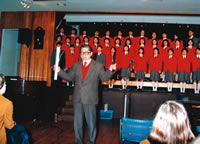
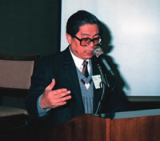
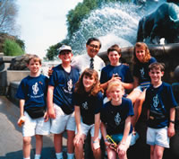
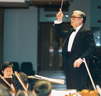
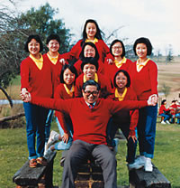

|
|
【祂是那羔羊】 |
|
|
祂受欺壓，祂受痛苦， 阿們。 |
|
|
|
|
|
|

https://youtu.be/a0xUQryjrnY -
https://youtu.be/LsI_GxPZs6Q
- 〈大地交響曲〉
- 〈試探〉
- 〈羔羊頌〉
- 〈哈米吉多頓〉
- 〈美好的童年〉
- 〈美滿前途全力創〉
葉惠康博士
BBS MH
榮譽音樂總監
葉惠康博士致力兒童音樂教育工作近四十年，是一位卓越的音樂老師及作曲家，四十多年來為香港音樂教育界作出偉大貢獻，並成為香港音樂教育界的傳奇人物，地位舉足輕重。他早年肆業於北京燕京大學音樂系，畢業於中央音樂學院，主修理論作曲。1970年獲美國肯塔基州南方浸信會神學院碩士學位，1979年於美國德州西南浸信會神學院，取得音樂藝街博士學位。葉博士的作品有交響樂、器樂曲、合唱曲、清唱劇和民歌改編曲等。他與香港浸會大學淵源深遠，1963年至1992年於該校任教，1973年建立了音樂藝術學系，出任系主任二十年。1993年獲受任為該校校董。

1988年率領葉氏兒童合唱團在澳洲的中學作示範演出
葉博士對本港合唱音樂及交響樂的教育普及工作均貢獻良多，被稱為香港的「兒童合唱團之父」。1969年他首先創辦了香港兒童合唱團，又協助組織多個本地兒童合唱團，在領導香港兒童合唱團的十四年間，曾被國際音樂教育協會(ISME)連續三度邀請在1974、1976及1978年會議上作示範表演。葉博士於1983年創立了葉氏兒童合唱團。三十多年來每年率領出國組往海外巡迴演出，包括歐洲、美洲、亞洲、澳洲、非洲，達三十多次，其中參加了很多國家的音樂節和文化交流活動，並曾於多個國際音樂會議演出，包括再度應國際音樂教育協會(ISME)邀請，先後於1988年澳洲舉行的第十八屆會議、以及1998年於南非舉行的第廿三屆會議作示範表演；1989年獲邀在全美國合唱指揮家聯會(ACDA)第三十屆會議上表演，受到四千位指揮熱烈的讚賞；1996年又應邀在全英國合唱國際音樂指揮家聯會(ABCD)第十一屆會議示範葉氏兒童合唱訓練法及作閉幕演出。1982葉博士出任在本港舉行的國際兒童合唱節的藝術總監之後，就聯合了多個兒童合唱指揮，組織了國際兒童合唱及演藝協會(ISCCPA)，並被選為主席，策劃和推動國際活動，影響廣闊深遠。

1989年「美國合唱指揮聯會第三十屆會議」(ACDA)於美國肯德基州路易士維爾舉行Louisville, Kentucky,USA (1989)
1987年他被推舉為永遠名譽主席後，於1999年復出任主席至2002年，又再被邀為永遠名譽主席。

葉博士應邀任「1992年國際兒童合唱節」的藝術總監及指揮丹麥歌本哈根 Copenhagen, Denmark (1992)
葉博士是一位有實效的音樂教育家，他緊密地領導他所創辨的葉氏兒童音樂實踐中心的同工們，不斷進行教學研究，他的「兒童音樂教育新概念和系統」廣為本港及海外音樂教育界所推崇。他曾被邀請到美國、俄羅斯、丹麥、巴西、新加坡、澳洲等地的音樂節作專題演講，題目包括「葉氏兒童音樂教育體系」、「如何組織兒童合唱團」、「合唱訓練法」、「變聲期的處理」、「應用電腦程序遊戲學習樂理基本知識」、「聽音訓練」等。 葉博士曾應邀在日本全國鋼琴比賽及美國《珍娜•芭候雅》國際鋼琴比賽中擔任評判，並任後者的國際顧問。他又曾長時期在電視及電台推廣古典音樂、組織音樂節、舉辦音樂研討會、邀請海外各類演奏家或樂團到本港表演。

1976年葉博士創立了香港泛亞交響樂團，出任音樂總監及指揮，致力推廣古典音樂和中國管弦樂作品，更成功地舉行了很多教育性貿的音樂會，是開創管弦樂教育講座音樂會的先河，得到政府文化節目部的支持，他又曾應邀指揮上海芭蕾舞樂團、廣州交響樂團和三藩市室樂團演出。而為了培養香港的兒童器樂好手，他更於1996年創辦香港兒童交響樂團，使兒童音樂教育的層面更為擴大。
葉博士自1969年起致力於兒童音樂教育工作，是孩子們音樂成長歷程上的良師益友。

葉氏兒童合唱團海外演出組部分團員與葉博士1988年在澳洲留影。Sydney, Australia (1988)
多年來葉博士對音樂教育的貢獻，得到廣泛社會各界向他頒發不同的榮譽名銜，如美國Fort Worth市、達拉斯市及吐桑市的榮譽市民名銜；美國科羅拉多州Avon湖市頒授金鑰匙；美國肯塔基州頒授上將名銜；1990年香港教育家年獎；2003年度香港特別行政區頒授榮譽勳章。2006年香港浸會大學向葉博士頒授榮譽院士名銜。
葉博士2006年於香港浸會大學第一屆榮譽大學院士頒授典禮上，代表七位榮譽大學院士致謝詞。
葉博士善於發掘才能超卓的兒童、少年，給予良好的環境和條件，加以鼓勵和培育。他歷年所建立的多個樂團 (合唱團、交響樂團)，就是這些超卓孩子孕育成長的地方。其中皎皎者有兩位國際青年指揮家比賽冠軍 (葉詠詩、曾智斌)、一位世界知名小提琴演奏家 (李傳韻)、一批香港學界管弦樂和合唱的知名指揮，以及一批小提琴專業演奏者。
http://www.yipshk.com/zh/leader-details/dr-yip-wai-hong
聖經中獅子和羔羊的隱喻
聖經常以獅子和羔羊的特性作為隱喻，形成強烈的對比。獅子以其力氣和兇猛聞名，羔羊卻是一種溫馴和依賴的動物。聖經很多時描述牠們與人及神的工作相關；這篇專論文正是研究聖經中的經文，如何以這兩個隱喻描繪神及基督的工作，並當中帶來的果效。
有關獅子的隱喻
古代近東的獅子形象
獅子顯著的特性，令古代近東和非洲一帶的人民特別感興趣。1 獅子因氣力強大及勇猛，亞述君王尤其喜歡捕獵。2
有被些捕的獅子被關起來（但六7），3「把獅子關起來，在古代美索不達米亞的碑銘和亞述君王的浮雕都可找到證據。他們讓獅子走出籠子，並加以追捕。」 4 亞述王
Ashurnasipal 二世（約公元前883至859年）在 Nimrud 養殖獅子，而在埃及 Ramses
二世（約公元前1290年至1224年），據推測也曾帶同寵愛的獅子上戰場。5
有代表性的獅子雕像，在一些重要的公共場所均可找到。6 城門就特別適合於這種擺設。巴比倫尼布甲尼撒二世，在著名的Ishtar城門所擺設的獅像，尤其值得注意。7
在獅像前有一條遊行路線，「以琺瑯彩磚獅像作為裝飾」。 8 此外，Shalmaneser三世征服Til Barsip後，把
「兩隻強大、刻有戰爭記錄的玄武岩獅子」放在該城南門。9
寺廟、王宮和王座，也會採用獅子的形象和雕塑作裝飾。10 一個很好的例子是 Tiglath Pileser三世在Kalhu王宮的入口處，擺設「獅子和公牛巨像，其外形造得極奇巧妙、滿有權威，令人感到驚訝。」11
國王顯然被獅子的威儀所吸引，常描述自己擁有獅子般的素質。因此亞述王 Adad Nirari
二世（公元前911至891年）宣布：「我強大、我是最強大的！我是英明的、我像獅子般勇敢！我是果斷的、我是至高的、我是高貴的！」 12 同樣 Assur-nasir-pal
二世（公元前883至859年）大膽地宣稱，「我是獅子，我是勇敢的！我 Assur-n™sir-pal，大能的王、亞述的王，為罪惡所揀選，為 Anu 最喜歡的，為
Adad 所喜愛的，在眾神中顯出大能。我是攻擊敵人無情的武器！」13 赫人君王 Hattusilis 一世同樣對他的兒子及繼承人Muršiliš
說：「你要敬拜牠。 ……在獅子的地方，[神只會建立]（另一）獅子。」14 連神明也不時與獅子比較。因此，埃及神衹 Amun-Re
被描繪成為獅子，他「愛牠所擁有的！」 15 迦南死亡之神 Mot，被描繪成為擁有「獅子咽喉」 的貪婪野獸。16
舊約中有關獅子的記述
古代近東有關獅子勇猛力強的描述，同樣見於舊約。希伯來文中一些和獅子有關的用語，往往將人甚至整個國家描繪成具有獅子的特質，特別是勇士和君王。將人描繪成獅子般，可以是負面或正面的表達。例如把邪惡的人與獅子掠食、及將食物撕裂後的吼叫相比。大衛向神祈禱，求從罪惡的人中得釋放時說：從追趕我的人中釋放我！拯救我！恐怕他們像獅子撕裂我，甚至撕碎，無人搭救，沒有人能救我（詩七1∼2；十七9∼12）17
從詩篇22篇可以看見大衛在最痛苦的情況下所想及的，他將敵人比作抓撕吼叫的獅子（二十二13）。他向主祈禱求拯救、脫離獅子的口（21節）。詩的第二部分表達了詩人落在敵人手中的痛苦（11∼21節），獅子的比喻是一個明顯的核心。在16節（希伯本文聖經17節）傳統翻譯是：他們扎了我的手和腳。這段文字不僅出現在七十士譯本和拉丁文聖經，也出現在Nahal
Hever所發現的古卷軸詩篇。18 不過《馬索拉文本》原是：「像一隻獅子，我的手和腳。」19
希伯來文的原意，也許是藉比喻加強了13和21節的果效：詩人強烈感到他是被一群張開大口的、貪婪的獅子所包圍，隨時會被吞噬。
邪惡的領袖也可以比作獅子。巴比倫、亞述王，以及埃及的法老，均被描述為邪惡與貪婪的獅子，他們喜愛撕裂別的民族和打散列國（耶五十17；結三十二2）。作為神子民的領袖，也可以說如同獅子般掠奪人民。其中的先知同謀背叛，如咆哮的獅子抓撕掠物。他們吞滅人民，搶奪財寶，使這地多有寡婦（結二十二2）
。
領袖和人民聯合起來，能使一個城市變成獅子般，先知那鴻認為這就是尼尼微（鴻二11∼12）。事實上，尼尼微整個國家被描繪成咆哮的獅子、抓撕掠物（賽五26∼30；耶四7；五6；五十17）20
但獅子的比喻，有時也用於正面的處境。正義的人會被認為膽壯像獅子，甚至惡人雖無人追趕也逃跑（
箴二十八1）。獅子的力量和勇氣，成了有膽量的人的比喻：勇敢的迦得人投奔大衛，被描述為「兇猛像獅子」（代上十二8）；勇敢的大衛報告說，作為一個年輕人，他擁有像獅子般的勇氣，因為他曾打死獅子（撒上十七36）。21
但有點奇怪的是戶篩曾提醒押沙龍，他的父親大衛具有不尋常的實力和勇武。因此，若大衛和他的勇士攻擊押沙龍的民時，效果會如同一場屠殺，就是押沙龍最勇敢的士兵，雖然有人膽大如獅子，他的心也必消化（撒下十七10）凡此種種關乎勇力的描繪，都與獅子並列。
獅子的形象也用在其他處境，如古代近東的王宮，而所羅門王的寶座為獅子雕塑所圍繞，進一步強調他的權力和王室的地位（王上十19∼20）。同樣，所羅門的殿刻有獅子的特色，也許都象徵神的威嚴和權力。神在地上的家就是殿宇（王上七12、29、51；
對照結八16）。
下文將進一步探討以獅子作為隱喻，來帶出人及神的工作。
舊約作者描繪人和耶和華的工作，會用獅子來作比喻。這隱喻對以色列人是非常熟悉的。將神比作獅子，在審判的情境猶為明顯。當約伯感到神對他作出無情的苦害，曾一度抱怨：「我若昂首自得，你就追捕我如獅子，又在我身上顯出奇能。」（伯十16）。因此，他懇求神的憐憫和減輕他的苦楚，以便他在餘下的時間可以稍得暢快（2∼22節）
。
希西家患病期間，同樣抱怨神無情地擊打他的身體。Oswalt
將他們的痛苦用圖象來描繪：「作者說他徹夜呻吟求幫助，但在早晨，『獅子』仍然用牠強而有力的口去擊碎他的骨頭。」（參伯三23∼26）到傍晚時，似乎沒有希望。22
「然而，希西家明白他的病是為他的好處著想：看哪，我受大苦，本為使我得平安；你救我脫離敗壞的坑，因為你將我一切的罪扔在你的背後。」（賽三十八17）而耶利米哀歌的作者，面對墮落的耶路撒冷民眾講話時，向神表達了他的悲哀和痛苦，他向我如熊埋伏，如獅子在隱密處。（哀三10）。一方面，對於神的審判，耶利米表達他自己過去在同胞手中的深情經歷（參14節）。另一方面，作為神所設立的先知，他希望他的聽眾了解，神仍對祂的子民守約：
我們不致消滅，是出於耶和華諸般的慈愛；是因他的憐憫不致斷絕。
每早晨，這都是新的；你的誠實極其廣大！
我心裡說：耶和華是我的分，因此，我要仰望他。（哀三22∼24）
耶利米作為耶路撒冷公民的代表，他感嘆神對這城市的審判；他指出一個事實，就是不僅個人，甚至城市和整個國家，都會受益於神如同獅子般的審判。在長篇的宣講上（耶二十五），耶利米預言神即將展開祂的審判，從耶路撒冷開始（29節），並延伸到整個國家；耶和華必從高天吼叫，從聖所發聲，像攻擊的獅子（30節）。審判將從這國發到那國（32節），與及地上一切的居民（30節）。因為神離了隱密處像獅子一樣，他們的地，因列國凶猛的欺壓，又因主猛烈的怒氣都成為荒蕪的。（38節）耶利米在其他地方也借用獅子的比喻，如宣布列國與及城市如以東（耶四十九19）和巴比倫（耶五十44）的審判。較早前，阿摩司也宣稱耶和華是一隻獅子，從耶路撒冷吼叫；祂不僅審判猶大和以色列罪孽深重的人（摩二4∼5）（二6∼16），也審判以色列的鄰國（一3∼二3）
約珥有關末世的預測（主的日子）也值得留意：耶和華從錫安吼叫，從耶路撒冷發聲，天地就震動。耶和華卻要作他百姓的避難所，作以色列人的保障。（珥三16）在那日，「由於列國已經自傲地對神的子民咆哮（賽五25∼30），神將為回歸的餘民之利益，好像獅子掠食咆哮。」
23 約珥的預言表明，將神比作咆哮的獅子不是獨有的、單一的審判。
獅子多種用法的隱喻，也出現於約翰的天啟文學。雖然獅子的形象在啟示錄中並未廣泛出現，但其效用也很重要。啟示錄四章7節與天上寶座連繫的四活物，其中之一被認為
「像一隻獅子」，這些天上的活物與撒拉弗和基路伯（賽六1∼3；結十14）十分相似。獅子的比喻，卻與神審判的預言及第五號的響聲相連。吹號後有災害性的蝗蟲，其牙齒像獅子的牙齒（啟九8），當第六號響起後，天使釋放馬軍帶來另一災害，馬的頭好像獅子頭，有火、有煙、有硫磺從馬的口中出來……殺了人的三分之一（啟九17∼18）。在啟示錄十章3節另一天使被形容為大聲呼喊，好像獅子吼叫，這比喻無疑是強調天使的聲音和力量。
「七雷」的響聲，暗喻天使的聲音另一種可怕的效果，預示著進一步的審判。
另一個很好的例子是何西阿先知的神諭。何西阿警告以色列和猶大將要來的審判，是由於其不忠和膜拜異邦神祇（何十三7∼8）。主透過何西阿宣稱：我必向以法蓮如獅子，向猶大家如少壯獅子。我必撕裂而去，我要奪去，無人搭救。（何五14）兩國將因此被擊敗，人民將被擄。然而在另一神諭，何西阿書揭示了主對其子民慈悲的心懷，在於將來祂會寬恕及使悔改的民歸回。他必如獅子吼叫，子民必跟隨他。他一吼叫，他們就從西方急速而來。（
何十一10）
「由於歌篾／以色列將回應丈夫更新忠誠的婚盟（何西阿／耶和華；二19∼20），所以未來的以色列民會以虔誠、信任和愛回應神。基於對何西阿／耶和華的忠誠與及跟他們持久的關係，歌篾／以色列將經歷更新的祝福。而神的子民亦因之將在應許地經歷失去已久的、約的祝福。」24
在以色列民出埃及和進入應許地的歷史中，受僱的先知巴蘭宣布神子民的力量就像一隻有力的獅子和母獅，是不可抗拒的（民二十三24，對照民二十四19）。而在一個更寬闊的場景下，以賽亞預言以色列的神會像獅子般保護他的人民，特別是耶路撒冷；祂的子民將戰勝他們的敵人（賽三十一4∼5）。彌迦也預言雅各餘剩的人必在多國多民中，如林間百獸中的獅子，又如少壯獅子在羊群中。他若經過就必踐踏撕裂，無人搭救。願你的手舉起，高過敵人！願你的仇敵都被剪除！（彌五8∼9）正如Barker指出，「就像一隻獅子抓傷和撕裂綿羊和其他動物，以色列也將克服所有的敵人……。沒有人能抵擋她。彌賽亞的國度，必須戰勝所有敵人。25
由此種種，我們看到比喻是與神的權威、能力和審判聯合。」
被拯救的餘民最終將返回應許地，以色列將享有一段非常和平和繁榮的日子。在那繁榮與和平的時期，將有一條大道稱為聖路…… 專為贖民行走……
在那裡必沒有獅子，猛獸也不登這路，在那裡都遇不見……
只有贖民在那裡行走。歌唱來到錫安。永樂必歸到他們的頭上。（賽三十五8∼10）在千禧年時，即或是兇猛的獅子都可以馴服：牛犢和少壯獅子會同群吃草，小孩子牽引他們……獅子必吃草，與牛一樣。（賽十一6∼7
； 賽六十五25）。26
所有這一切將透過神的受膏者、彌賽亞基督耶穌成就，稍後我們將再討論這一點。下面是另一個與動物有關的隱喻，也可應用到基督身上；之後我們會總結這兩個形象在基督身上的重要性。
有關羔羊的隱喻
古代近東有關羊的隱喻
羊經常出現在古代近東的記錄中，在很多情況下都受到重視，牠們是奶類、肉類和衣服的來源或原料。羊可以用來踩糧滲入土壤，以及用作祭祀。在某些情況下，羊代表某些神靈、如Ea，或巫術；在美索不達米亞和阿門，羊是守護神底比斯。27
至於羔羊是羊毛和祭牲的來源，也往往是贈送給人的禮物。28 牠們也與蘇美爾民族的樂園Dilmum 有關。在那和平和純潔之應許地有這樣的傳說：「Dilmum
的土地是完美的，Dilmum 的土地是潔淨的……獅子沒有殺戮，狼也不攫取羔羊。」 29 古代烏加列神話，死亡之神 Mot
吹噓說他已取去巴力的神的生命：「我走近征服者巴力，我將他像一隻羔羊一樣放在我的嘴裡，他就像一個小孩子在我的口裡被壓碎。」30 因此，Anat
女神獻七十隻羊「作為征服者巴力的祭物 」，隨後，她自殺而令巴力復活過來。31
聖經中有關羊羔的比喻
跟古代近東的情況相似，聖經中的羊因其羊毛（箴二十七26）及常作為祭牲而受到重視。羔羊與每天、每週、每月，和特別節期的獻祭有關。特別值得注意的是逾越節期間，每天要獻七隻羔羊的做法（民二十八16∼25）。羔羊溫柔的特徵也出現於聖經。耶利米把自己比作一頭柔順的羊羔被牽到宰殺之地，落在仇敵手中（耶十一19）。這形象也出現於耶穌差遣七十人出去時的描述，他們會如同羊羔進入狼群（路十3）。神的子民在耶和華的膀臂中，也被形容為溫柔、順從和依賴的羔羊，耶和華是他們偉大的救主和牧羊人。因此，在未後的日子，他必像牧人牧養自己的羊群，用膀臂聚集羊羔抱在懷中，慢慢引導那乳養小羊的。（賽四十11）
羊有時亦出現於與審判有關的經文。如以賽亞預言神會審判祂的民，和平會臨到大地，羊羔必來吃草，如同在自己的草場；豐肥人的荒場被遊行的人吃盡。（賽五17）以色列人的土地，不再由他們自己享用，而是外來的侵略者，在昔日以色列人的田野間照料羊群。但在耶利米對巴比倫的預言中，則描述巴比倫人會像羊羔、像公綿羊和公山羊下到宰殺之地。（耶五十一40）。
有關羔羊的比喻，最重要的該是關於那應許中的彌賽亞、大衛的子孫耶穌基督。事實上，在耶穌開始傳道時，施洗約翰宣佈祂是神的羔羊，除去世人罪孽的！（約一29，對照一36）。32
Jeremias
將施洗約翰所說的話，與以賽亞有關受苦僕人的預言相連：他被欺壓，在受苦的時候卻不開口；他像羊羔被牽到宰殺之地，又像羊在剪毛的人手下無聲，他也是這樣不開口。（賽五十三7）。33
Westcott 宣稱，「毫無疑問，該比喻是直接引自以賽亞書五十三章7節。」34
（參徒八32）有趣的是當埃提阿伯太監正念這段話時，腓利來到並解釋這段話，對他傳講耶穌（徒八35）。Young
將施洗約翰的話，與其他經文如以賽亞五十三章7節相連，並評論說：「人無法只是讀了預言，而沒有思想到那位真正的僕人，在彼拉多坐席審判時沒有開口說一句話的事實。」35
以賽亞所提出的比喻，也建基於舊約的獻祭制度。因此Westcott指出，「想要排除逾越節的羔羊是不可能的，主後來被證實祂就是那羔羊。」 36
如果施洗約翰只是反映當前猶太人的意見，認為將要來的彌賽亞會代替人的罪受苦，但是沒有死，那麼「他所說的便超過他所知道的了。」37
因新約作者將繼續證明基督是最終成就逾越節的意義。就如保羅自信地指出：因為我們逾越節的羔羊基督已經被殺獻祭了。（林前五7）彼得指出，信徒被贖回不是憑著能壞的金銀等物，乃是憑著基督的寶血，如同無瑕疵、無玷污的羔羊之血。（
彼前一18∼19）。38
羔羊的比喻和形象，放在耶穌身上是最貼切的表達。約翰在新約的啟示錄特別有力地指出這點。在啟示錄祂被描述為羔羊，是戰勝死亡和坐在寶座上的（啟五6∼14），因此祂（五5）配得展開那書卷。（六1、
3、5，7，9、12，八1）。羔羊也被看作是統治者在祂的寶座上（七9∼17）祂會牧養這些從大患難中出來的人（七14）。最後，羔羊站在錫安山，就是他們最後能得勝、並因他們對羔羊的忠心而將要得著安慰和保證（十四1∼4）。
另一鮮明的對比，是把羔羊描繪為一位帶著王權的審判官，祂會審判那些蓄意敵視羔羊的人（十四10，十七12∼14）。聖經其中一個最可怕的比喻，是邪惡的地土被描繪成向山和巖石叫喊：倒在我們身上吧！把我們藏起來，躲避坐寶座者的面目和羔羊的忿怒。（啟六16）因為他們忿怒的大日子到了。溫馴的羔羊在這裡呈現出最不可能的角色，就是一隻憤怒的動物。39
基督能夠並將要如大勝利者戰勝邪惡（十九11∼21），成為宇宙（五1∼3）及世界的統治者（十一15∼18）；列國將有一天要來在你面前敬拜，因你公義的作為已經顯出來了。（
十五4）
只有被擄贖的人，會被挑選出來享受神最後的勝利、及與基督聯合。這應許在「羔羊慶祝婚筵」（十九7∼9）的比喻已成就。這比喻的重點是，「神的子民最終得以進入祂已展開的親密關係中。」
40 這是一個
「比喻性的方式，去反映最後的救贖」－－神的帳幕在人間。祂要與人同住，他們要作祂的子民。神要親自與他們同在」（啟二十一3）。這就是為甚麼約翰可以使用新婦妝飾整齊、等候丈夫這比喻，如同新耶路撒冷由神那裡從天而降，住在人的中間（啟二十一2）；而天使也可以將新耶路撒冷指為「新婦，羔羊的妻」（啟二十一9）41
圍繞這一宏偉的新耶路撒冷，城牆有十二根基，根基上有羔羊十二使徒的名字。（啟二十一14）。羔羊的寶座就在那裡（啟二十二1∼3），地上理想的樂園將最終達成。這將是一個不需要殿的城，因為主神─全能者─和羔羊為城的殿（啟二十一22）。Walvoord指出，「這裡的疑惑將消失，正如聖經指出主自己和羔羊為城的殿。不再需要建築物的結構，因為聖徒可直接到神面前，不再需要地上的中保或永遠的庇護。42
那城又不用日月光照，因有神的榮耀光照，又有羔羊為城的燈（二十一23）。她又是一個預留給信徒的城，因只有名字寫在羔羊生命冊上的才得進去（二十一27）。
基督與獅子及羔羊的比喻
常見的外國諺語，往往也有提及獅子和羔羊。例如「在獅子的洞穴刮牠的鬍子」或「拿走獅子的分」，也有「溫柔的羔羊」；可是兩者很少會放在一起。一個值得注意的例外是當時一句人們熟悉的話：「進來像頭獅子，出去像頭綿羊」。
在聖經中獅子和羔羊也不常被放在一起。然而，在一些關鍵的經文，卻把兩者也跟彌賽亞時代某些特質連在一起。以賽亞談及彌賽亞統治的新紀元，將是一個平安、和睦，公正和安穩的處境，在其中：
豺狼必與綿羊羔同居，
豹子與山羊羔同臥；
少壯獅子與牛犢並肥畜同群；
小孩子要牽引牠們
牛必與熊同食；
牛犢必與小熊同臥；
獅子必吃草，與牛一樣。（賽十一6∼7）
在這種盟約關係中，「所有指向伊甸園食青草的生物將恢復」（參創一29∼30）。43
事實上，所有仇恨將會消失，不僅人與人之間，在動物界、甚至在人和牲畜之間也將有和諧。44
以賽亞預言的情景與彌賽亞新紀元相似，豺狼必與羊羔同食；獅子必吃草與牛一樣。（賽六十五25）這個時代一般是指向千禧年，是基督第二次再來、對抗邪惡勢力，與及對新耶路撒冷最後祝福的一段時期。
「將會有普世性的和平……這和諧將不會僅限於人類。大自然一直在『勞苦嘆息』等待救贖，將從墮落詛咒中得釋放（參羅八19∼23），即使是動物，也彼此和睦相處（參賽一6∼7，六十五25），大自然所造成的破壞會平靜下來。」45
獅子和羔羊的比喻與彌賽亞將來的祝福、並祂公正的統治這關係固然重要，但獅子和羔羊之喻，與基督之間還有另一種更重要的關聯。
啟示錄五章5至6節是一段極為重要的、把獅子和羔羊比作基督的經文。雖然啟示錄其他地方描述基督為羔羊的比喻超過24次，46
啟示錄五章5節，描述基督是猶大支派中的獅子，大衛的根，祂是首先被公認唯一能打開七印書卷的。在下一節，祂被確定為「被殺害的羔羊，（祂雖被殺，但仍然活著）」。 47
獅子和羔羊與基督相連的雙重隱喻，正指向聖經的中心主題，並為成就這地球上歷史性的事件找到高峰。
早在族長時期，雅各對猶大祝福時，他預先宣告：
猶大是個小獅子；我兒啊，你抓了食便上去。
你屈下身去，臥如公獅，蹲如母獅，誰敢惹你？
權柄必不離猶大，杖必不離他兩腳之間，
直等属他的那位來到，萬民都必歸順他。（創四十九9∼10）
因此，學者 Mathews
正確地指出，「宣告一個理想、持久及普世的國度，必須著眼於大衛最偉大的子孫那完美的末世身分。基督教的釋經家已清楚確定經文所指向的王，就是拿撒勒人耶穌。因此可以與歷史學家認同的，就是大衛的君主政體；必須首先考慮及同意古猶太學者的解釋，就是我們的文本需要彌賽亞來成就。」48
基督被稱為「大衛的根」也很重要。Beale指出，「有關基督的兩種描述，『獅子從猶大部族出來』和『大衛的根』，是出自創世記四十九章9節及以賽亞書十一章1及10節（參耶十一19，二十三5，三十三15；亞三8）……兩者均預言彌賽亞的身分，祂將透過審判戰勝祂的敵人。耶穌成就了這兩個預言。」49
重要的是，作為猶大部族的獅子（創四十九10），彌賽亞是大衛的子孫，出自猶大，祂擁有執政的權利（撒下七18∼29 ；代上十七16∼27；
詩八十九19∼37；結三十四24∼31，對照賽十一1∼9；啟十一15）。事實上，這些段落指向一個重要、統一的主題，並與聖經的結構交織著。因為這隻「獅子」，
也是大衛的根、大衛的繼承人；亞伯拉罕、大衛並新約，都找到他們的實現（見耶二十三5∼6，三十一31∼34，
三十三14∼18；結三十七24∼28）。在基督裡，神預定應許的計劃逐步展開，最終亦將實現。50
如上所述，基督、羔羊，也是征服、得勝的羔羊。祂完全成就了逾越節替代人類贖罪之祭牲的目的，若祂沒有復活，那犧牲將是不完整的（林前十五12∼20，56∼57）。作為人類的救主，祂戰勝罪惡、死亡，以及所有的邪惡勢力，這活的羔羊現正坐在寶座上，是至高無上的、尊貴的、統治萬有的；作為獅子，祂全權擁有猶大及大衛繼承人的權力。整個世界最終的歷史，會在這獅子和羔羊中找到她的高峰。世上的國成了我主和主基督的國；他要作王，直到永永遠遠。（啟十一15）獅子和羔羊的比喻指出一個事實，基督既是人類的統治者，也是世人的救主。
這些隱喻給信徒帶來希望和信心。由於與基督聯合（西一27），信徒可以透過聖靈的能力，展示獅子般的勇氣，以及像羔羊般跟隨和依靠耶穌基督。因此當牧長顯現的時候，忠心的信徒必得那永不衰殘的榮耀冠冕（彼前五4）。在此之前，我們甚至驚嘆，「來吧，主耶穌！」
讓希伯來書作者的祝福（十三20∼21）臨到我們：但願賜平安的神，就是那憑永約之血、使群羊的大牧人－－我主耶穌從死裡復活的神，在各樣善事上成全你們，叫你們遵行他的旨意；又藉著耶穌基督在你們心裡行他所喜悅的事。願榮耀歸給他，直到永永遠遠。阿們！